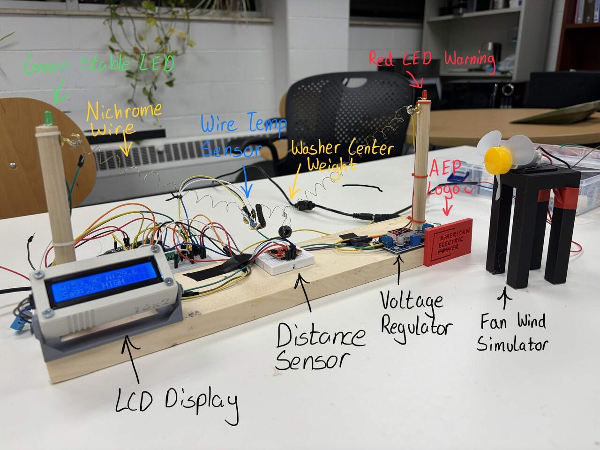

LOG 01 · FIELD TEST · 2ND PLACE, AEP DYNAMIC GRID CHALLENGE
Dynamic Transmission Line Monitor
24-hour makeathon build (MakeOHI/O 2026): a live demonstration of dynamic line rating. Nichrome wire stands in for a conductor; an ESP32 reads contact temperature, ambient conditions, and a time-of-flight LiDAR tracking sag off a weighted target. As the wire heats, it expands, and the system watches it happen.
The hard part was physical: every sensor mount melted off past 50 °C until heat-shrink tubing held at 4am. Logged 700+ measurements; analysis matched IEEE 738 thermal expansion models within ~5% error, including a forced-convection cooling demo most teams didn't model.
Bench: ESP32 · DS18B20 · ToF LiDAR · CSV pipeline · Python analysis | Build photos & write-up →
